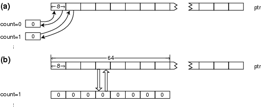

Figure 1: Optimization of memory initialization function using packed data instructions. (a) Conservative implementation where successive LDB/STB instructions are used for accessing and storing array elements. (b) One iteration illustrating how LDDW, MVK, and STDW instructions are used to zero out 64 bits worth of data in one fell swoop.
Back to Article